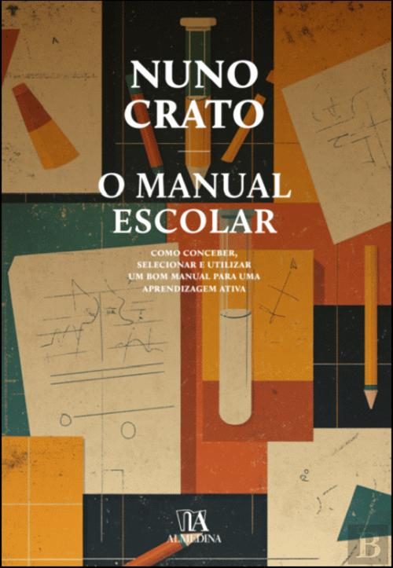
O Manual Escolar
Almedina · 2025
Como conceber, selecionar e utilizar um bom manual para uma aprendizagem ativa.
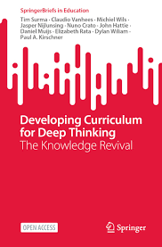
Developing Curriculum for Deep Thinking EN
Springer · 2025
The knowledge revival — conceber currículos que promovam o pensamento crítico e um ensino rico em conhecimento.
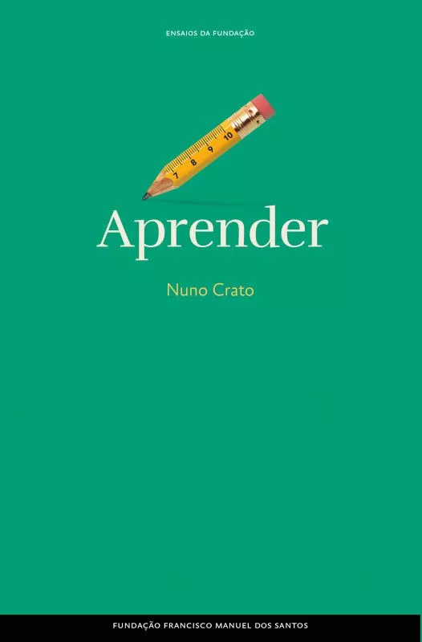
Aprender
FFMS · 2025
Um olhar acessível e rigoroso sobre os processos de ensino e aprendizagem.
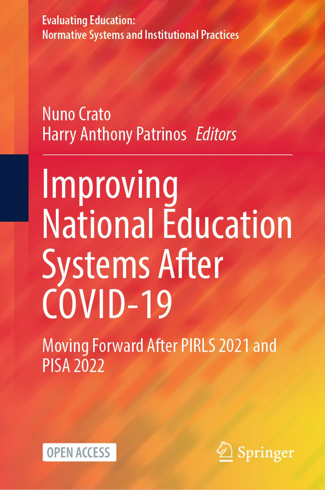
Improving National Education Systems After Covid-19 EN
Springer · 2024
Avançar depois do PIRLS 2021 e do PISA 2022 — um estudo em 12 países.
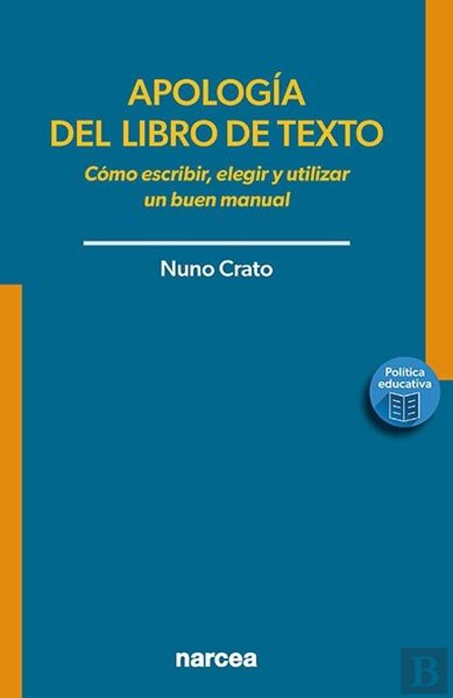
Apología del libro de texto ES
Narcea · 2024
Defiende el valor pedagógico del libro de texto frente a modas educativas.
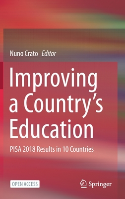
Improving a Country's Education EN
Springer · 2020
Resultados do PISA 2018 em 10 países — comparações internacionais de reformas educativas.
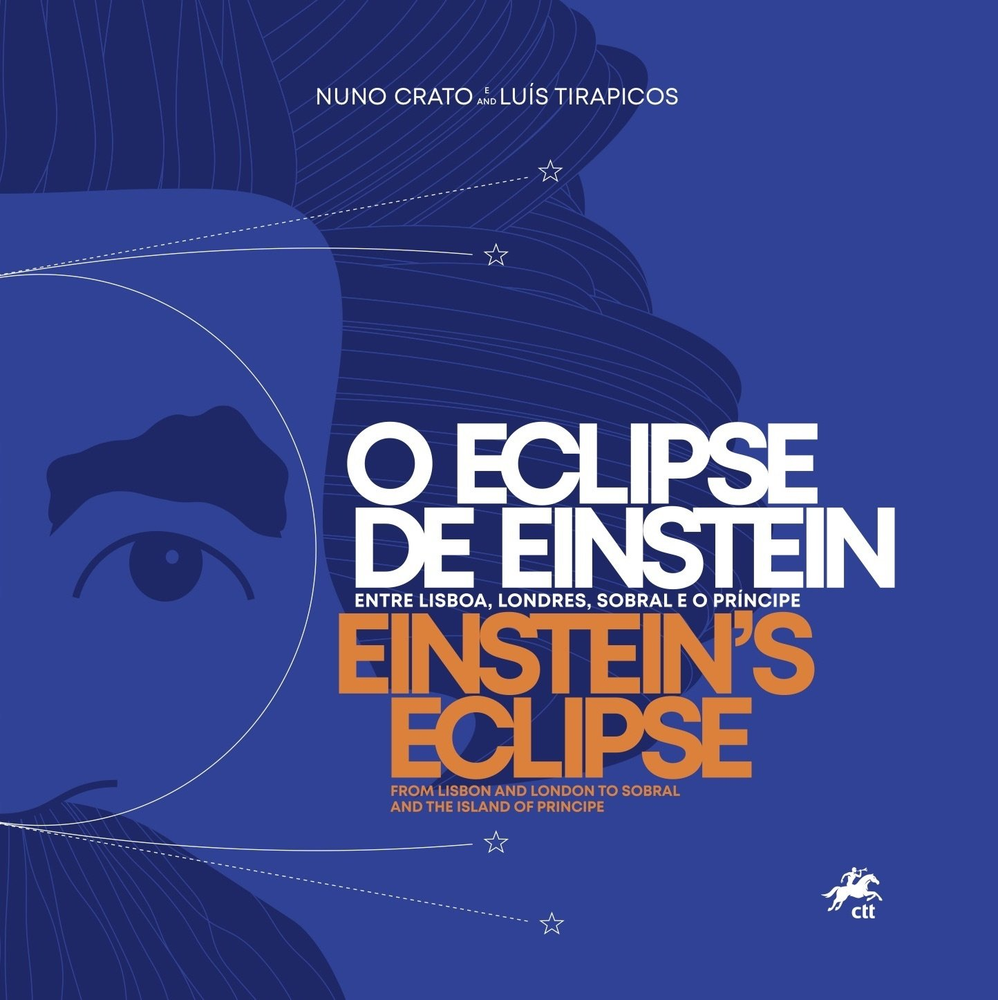
O Eclipse de Einstein
2019
A confirmação da Relatividade Geral no eclipse de 1919 e o papel de Sobral e do Príncipe.
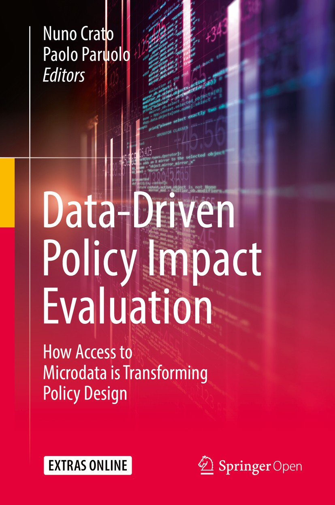
Data-Driven Policy Impact Evaluation EN
Springer · 2018
Um quadro para avaliar políticas públicas com métodos quantitativos.
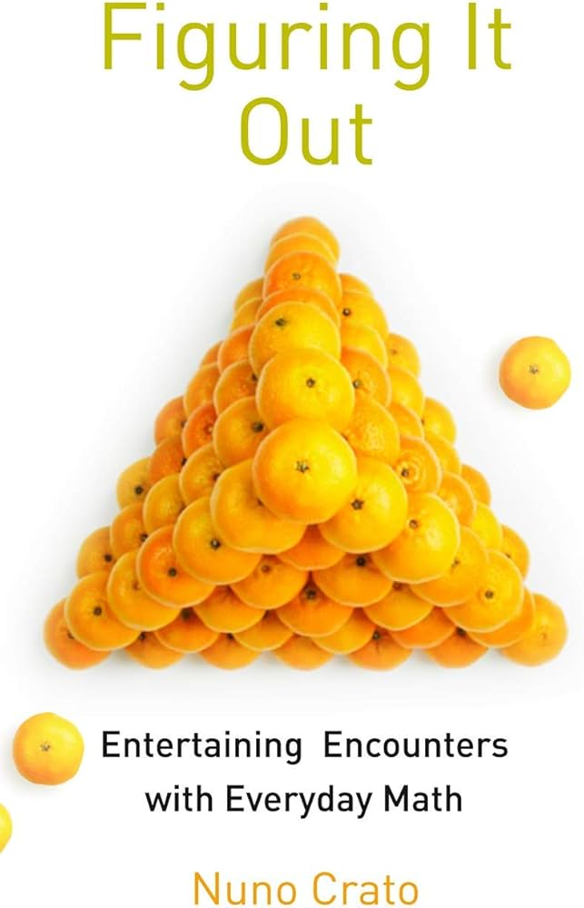
Figuring It Out EN
2016
Lógica, raciocínio e pensamento num mundo complexo.
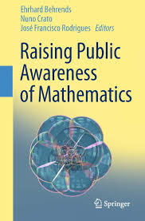
Raising Public Awareness of Mathematics EN
2012
Esforços globais para tornar a matemática visível e acessível ao público.
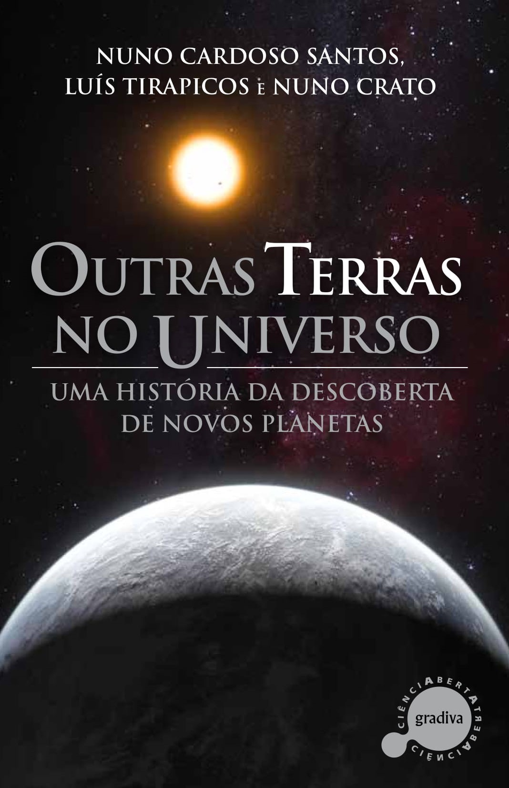
Outras Terras no Universo
2012
A busca por exoplanetas e a possibilidade de vida extraterrestre.
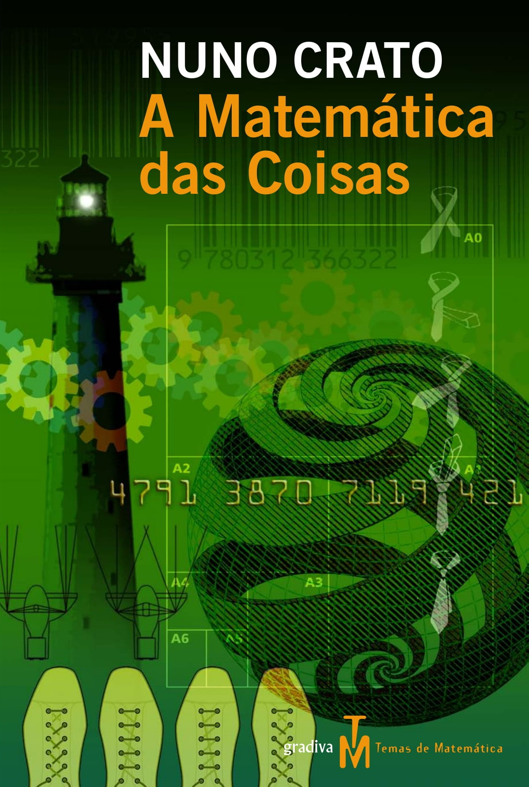
A Matemática das Coisas
2008
Como a matemática está presente nas situações do dia a dia.
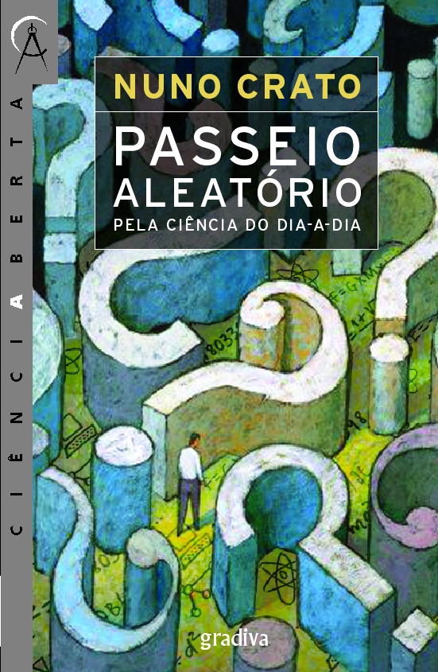
Passeio Aleatório
2007
Um percurso informal pelos conceitos matemáticos do quotidiano.
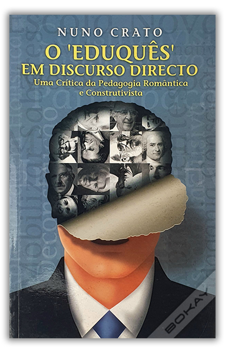
O “Eduquês” em Discurso Directo
2006
Uma crítica às doutrinas pedagógicas que afastam a educação do conhecimento sólido.
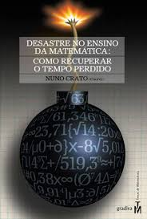
O Desastre no Ensino da Matemática
2006
Como recuperar o tempo perdido — análise e propostas.
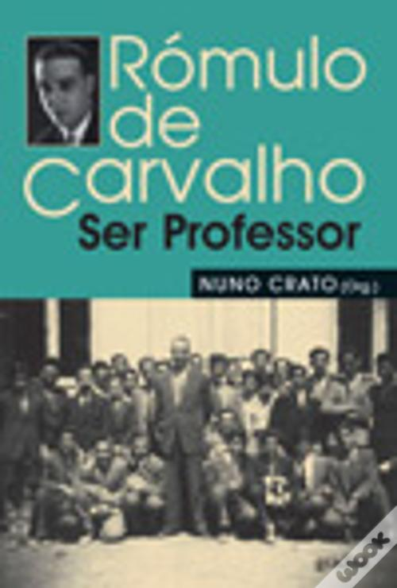
Rómulo de Carvalho — Ser Professor
2006
Uma reflexão sobre o papel e a responsabilidade de ser professor.
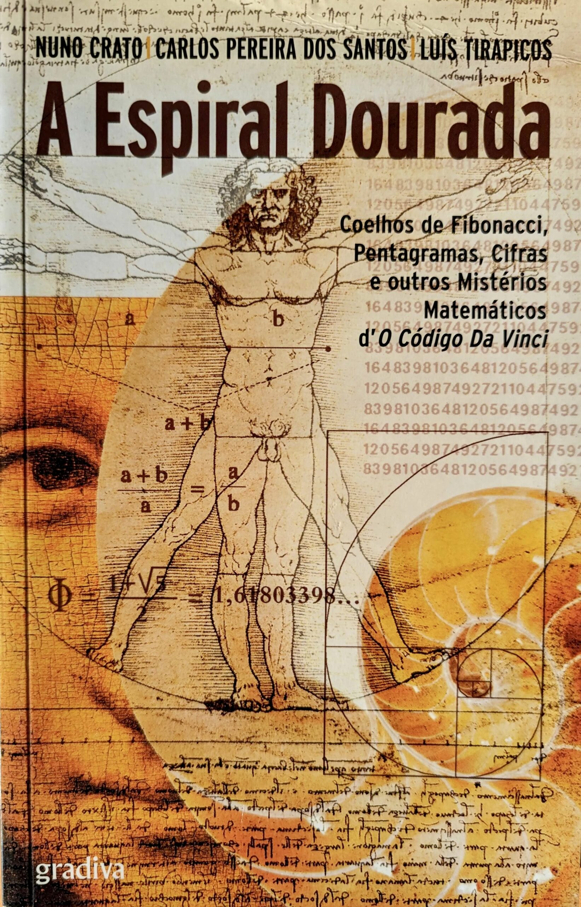
A Espiral Dourada
Gradiva · 2006
Com Carlos Pereira dos Santos e Luís Tirapicos
Coelhos de Fibonacci, pentagramas e cifras — os mistérios matemáticos que inspiraram O Código Da Vinci.
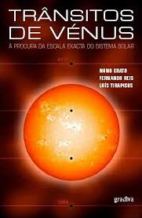
Trânsitos de Vénus
2004
À procura da escala exata do Sistema Solar — as expedições dos séculos XVIII e XIX.
2025 · abr
Falta educação
Artigo de opinião no Público, 26 de abril de 2025.
Ler